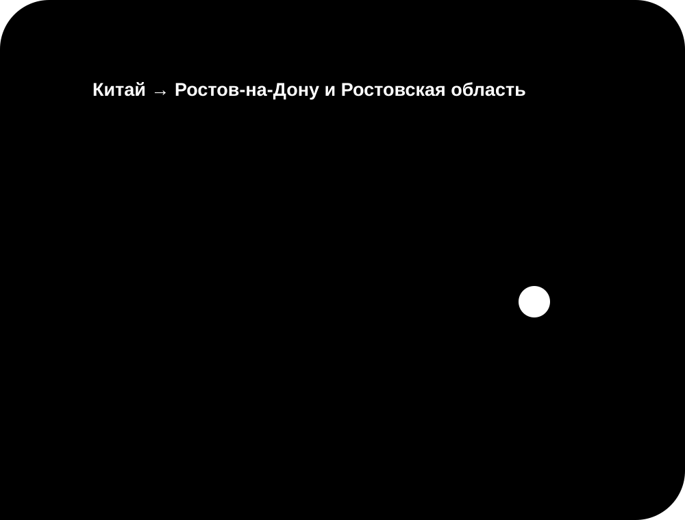

Вы выбираете товар
Пришлите ссылку, фотографию или описание того, что хотите заказать из Китая.
Совместная закупка · Ростов-на-Дону и Ростовская область · вся Россия
Совместная доставка подходит тем, кто нашёл товар в Китае, но не хочет самостоятельно оформлять оплату и перевозку. Я сопровождаю заказ от предварительного расчёта до отправки в ваш регион.

Покупаем вместе
В общей закупке несколько заказов проходят один понятный маршрут. Вы передаёте выбранный товар, я уточняю детали, готовлю расчёт и после согласования организую выкуп и доставку из Китая.
Пришлите ссылку, фотографию или описание того, что хотите заказать из Китая.
Проверяю предложение и индивидуально рассчитываю стоимость выкупа и доставки.
После согласования товар добавляется в совместный заказ и выполняется выкуп.
Заказ прибывает в Ростов-на-Дону и Ростовская область или отправляется в другой регион России.
Полезно перед заказом
Сохраните ссылку на карточку, выберите размер, цвет и количество. Если в предложении несколько вариантов, приложите снимок нужной позиции. Укажите город получения и важные требования. По этим данным можно проверить доступность, уточнить условия продавца и рассчитать ориентировочные расходы до выкупа. Такой порядок уменьшает риск ошибки и помогает сразу сравнивать действительно одинаковые варианты.
Простой порядок действий
Вам не требуется самостоятельно разбираться с оплатой на китайской площадке и международной отправкой. Подготовьте ссылку или фотографию товара и присоединитесь к закупке через Telegram либо ВК.
Пришлите ссылку, фотографию или описание в Telegram либо ВК.
Узнайте итоговую стоимость выкупа и доставки до оформления заказа.
Подтвердите товар и условия, после чего я организую выкуп.
Ориентировочный срок доставки — 18–31 день, в зависимости от закупки.
Площадки Китая
Китайские маркетплейсы предлагают большой выбор, но оформление, оплата и доставка в Россию могут требовать помощи. В совместной покупке я выступаю организатором: помогаю с заказом, выкупом и доставкой из Китая.
Для заказа с Pinduoduo, 1688, Poizon, Taobao или другой доступной площадки отправьте найденное предложение. Возможность выкупа и условия уточняются до добавления товара в закупку.
Проверяем выгоду до заказа
Перед совместной покупкой можно сравнить итоговую стоимость товара из Китая с предложениями на Ozon и Wildberries. Для честного сравнения учитываются цена товара, количество, характеристики, комиссия и доставка.
Если товар из Китая действительно дешевле, вы увидите разницу до выкупа. Если выгоды нет, мы не будем показывать вымышленную экономию.
Ответы перед заказом
Возможность выкупа проверяется по выбранной позиции. После проверки вы получите индивидуальный расчёт вместе с доставкой.
Предварительная итоговая стоимость сообщается после получения ссылки, нужных параметров, количества и города доставки.
Участники передают позиции для общей закупки, а организатор согласует расчёт, выкуп и доставку. Условия каждого товара подтверждаются отдельно.
Передайте карточку товара или снимок экрана. До оформления я уточню доступность, параметры, стоимость и возможный маршрут доставки.
Если продавец не принимает российскую оплату или не доставляет в Россию, оформить позицию можно через организатора совместной закупки.
Достаточно ссылки или фотографии, нужных характеристик, количества и города получения. Уточняющие вопросы задаются в Telegram или ВК.
Цена зависит от веса, объёма, маршрута, города получения и условий продавца. Поэтому расчёт выполняется до выкупа индивидуально.
Я сверяю доступные характеристики, количество и условия продавца. Дополнительные фотографии или проверка обсуждаются для конкретного заказа.
Помощь организатора полезна для оплаты на китайской площадке, согласования позиции и организации перевозки до России.
Присоединиться к закупке
Отправьте ссылку или фотографию в Telegram либо ВК. Я рассчитаю стоимость выкупа и доставки.